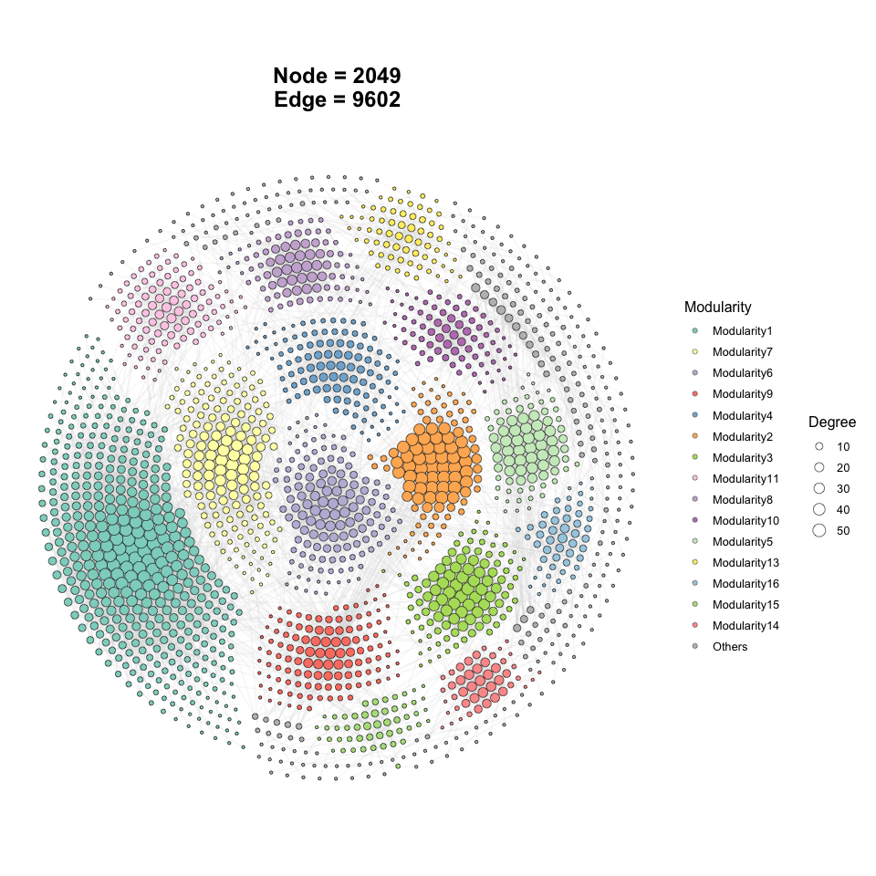
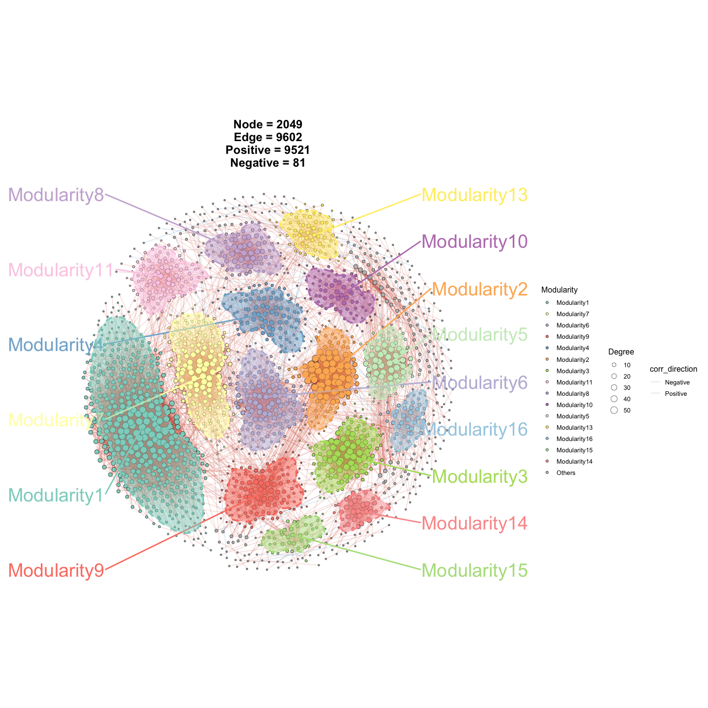
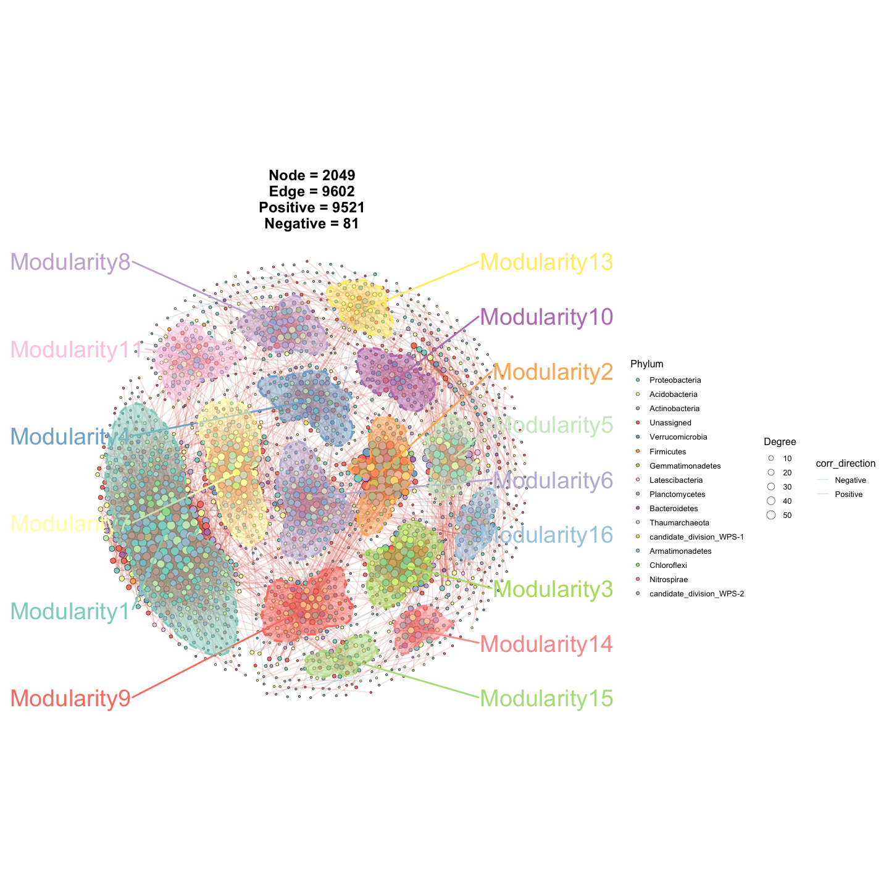
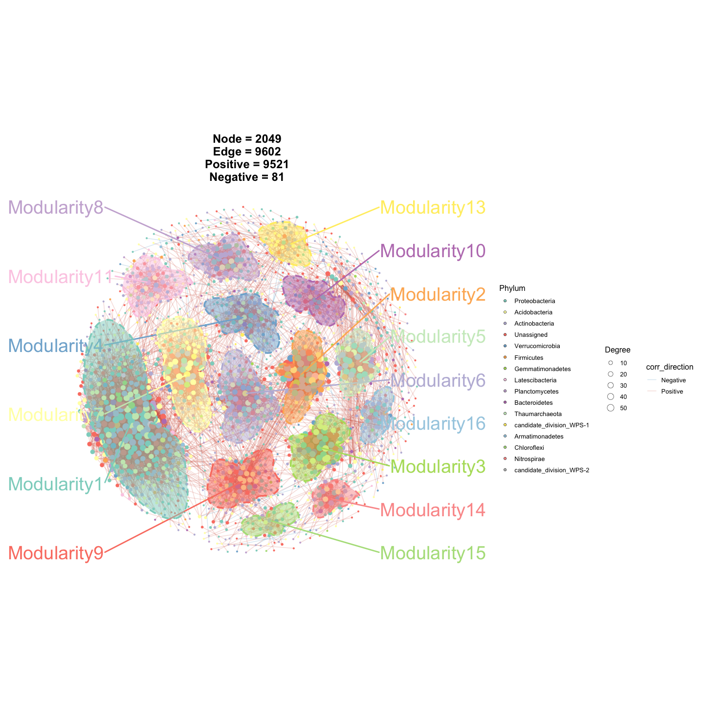
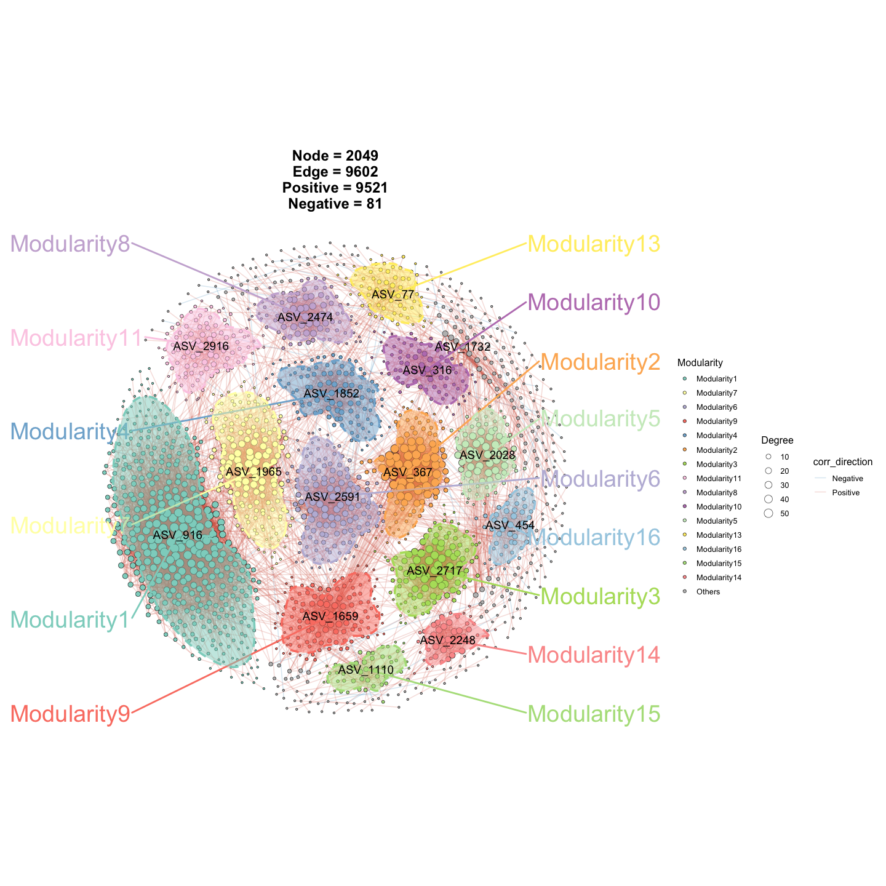
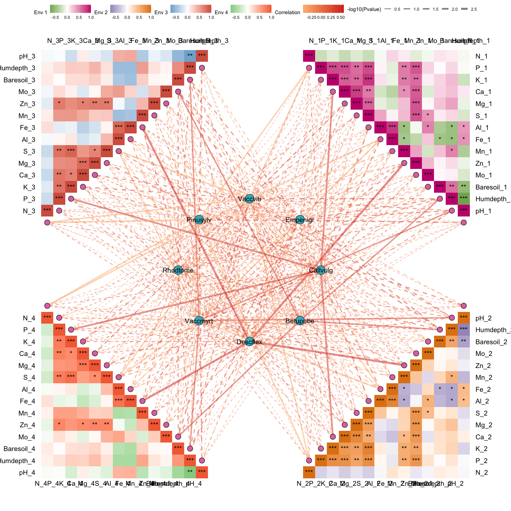
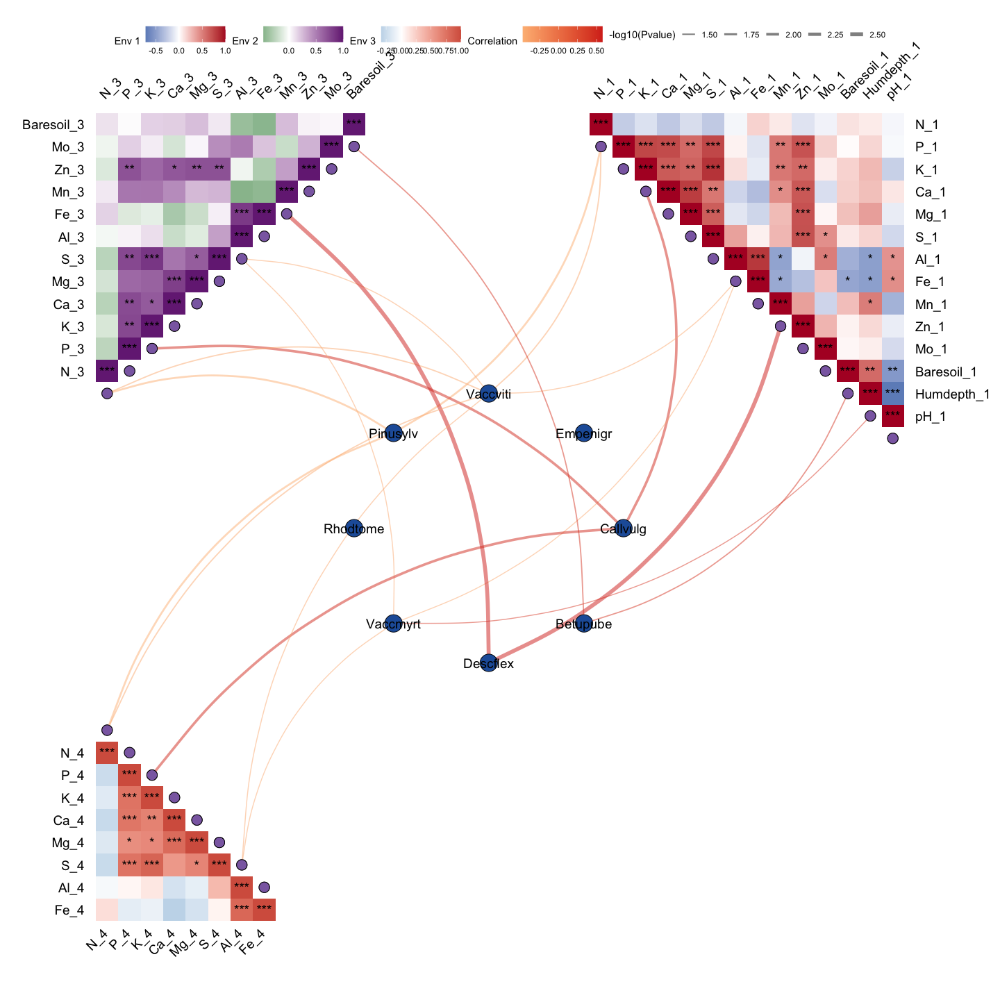

ggNetView is an R package for network analysis and visualization. It provides flexible and publication-ready tools for exploring complex biological and ecological networks.
Installation
You can install the development version of ggNetView from GitHub with:
Example1
Step1: load ggNetView
library(ggplot2)
#> Warning: package 'ggplot2' was built under R version 4.5.2
library(ggnewscale)
library(ggNetView)
#>
#> ░██ ░██
#> ░██
#> ░████████ ░████████ ░████████ ░███████ ░████████ ░██ ░██ ░██ ░███████ ░██ ░██ ░██
#> ░██ ░██ ░██ ░██ ░██ ░██ ░██ ░██ ░██ ░██ ░██ ░██░██ ░██ ░██ ░██ ░██
#> ░██ ░██ ░██ ░██ ░██ ░██ ░█████████ ░██ ░██ ░██ ░██░█████████ ░██ ░████ ░██
#> ░██ ░███ ░██ ░███ ░██ ░██ ░██ ░██ ░██░██ ░██░██ ░██░██ ░██░██
#> ░█████░██ ░█████░██ ░██ ░██ ░███████ ░████ ░███ ░██ ░███████ ░███ ░███
#> ░██ ░██
#> ░███████ ░███████
#>
#>
#> Yue Liu, Chao Wang (2026). ggNetView: An R Package for Reproducible and Deterministic Network Analysis and Visualization.
#>
#> Maintainers:
#> - Yue Liu <yueliu@iae.ac.cn>
#> - Chao Wang <cwang@iae.ac.cn>
#>
#> Manual: https://jiawang1209.github.io/ggNetView-manual/
#> GitHub: https://github.com/Jiawang1209/ggNetView
#> Bug Reports: https://github.com/Jiawang1209/ggNetView/issues
#>
#>
#> Type citation('ggNetView') for how to cite this package.
#> Run browseVignettes('ggNetView') for documentation.
#> Step2: load Data
You can load raw matrix
data("otu_tab")
otu_tab[1:5, 1:5]
#> KO1 KO2 KO3 KO4 KO5
#> ASV_1 1113 1968 816 1372 1062
#> ASV_2 1922 1227 2355 2218 2885
#> ASV_3 568 460 899 902 1226
#> ASV_4 1433 400 535 759 1287
#> ASV_6 882 673 819 888 1475You can load rarely matrix. Note : the rownames of
otu_rareis the features.
data("otu_rare")
otu_tab[1:5, 1:5]
#> KO1 KO2 KO3 KO4 KO5
#> ASV_1 1113 1968 816 1372 1062
#> ASV_2 1922 1227 2355 2218 2885
#> ASV_3 568 460 899 902 1226
#> ASV_4 1433 400 535 759 1287
#> ASV_6 882 673 819 888 1475
data("otu_rare_relative")
otu_rare_relative[1:5, 1:5]
#> KO1 KO2 KO3 KO4 KO5
#> ASV_1 0.03306667 0.05453333 0.02013333 0.03613333 0.02686667
#> ASV_2 0.05750000 0.03393333 0.06046667 0.05810000 0.07320000
#> ASV_3 0.01733333 0.01296667 0.02290000 0.02336667 0.03106667
#> ASV_4 0.04266667 0.01093333 0.01416667 0.01933333 0.03346667
#> ASV_6 0.02646667 0.01856667 0.02110000 0.02353333 0.03806667You can load node annotation. Note : the rownames of
tax_tabis NULL.
data("tax_tab")
tax_tab[1:5, 1:5]
#> # A tibble: 5 × 5
#> OTUID Kingdom Phylum Class Order
#> <chr> <chr> <chr> <chr> <chr>
#> 1 ASV_2 Archaea Thaumarchaeota Unassigned Nitrososphaerales
#> 2 ASV_3 Bacteria Verrucomicrobia Spartobacteria Unassigned
#> 3 ASV_31 Bacteria Actinobacteria Actinobacteria Actinomycetales
#> 4 ASV_27 Archaea Thaumarchaeota Unassigned Nitrososphaerales
#> 5 ASV_9 Bacteria Unassigned Unassigned UnassignedStep3: create graph object
obj <- build_graph_from_mat(
mat = otu_rare_relative,
transfrom.method = "none",
method = "WGCNA",
cor.method = "pearson",
proc = "BH",
r.threshold = 0.7,
p.threshold = 0.05,
node_annotation = tax_tab
)
obj
#> # A tbl_graph: 2049 nodes and 9602 edges
#> #
#> # An undirected simple graph with 100 components
#> #
#> # Node Data: 2,049 × 14 (active)
#> name modularity modularity2 modularity3 Modularity Degree Strength Kingdom
#> <chr> <fct> <ord> <chr> <ord> <dbl> <dbl> <chr>
#> 1 ASV_916 1 1 1 1 58 50.5 Bacter…
#> 2 ASV_777 1 1 1 1 58 48.7 Bacter…
#> 3 ASV_606 1 1 1 1 55 45.8 Bacter…
#> 4 ASV_740 1 1 1 1 54 47.2 Bacter…
#> 5 ASV_14… 1 1 1 1 54 44.5 Bacter…
#> 6 ASV_23… 1 1 1 1 54 47.4 Bacter…
#> 7 ASV_15… 1 1 1 1 52 45.3 Bacter…
#> 8 ASV_24… 1 1 1 1 52 43.0 Bacter…
#> 9 ASV_19… 1 1 1 1 52 43.0 Bacter…
#> 10 ASV_568 1 1 1 1 51 45.1 Bacter…
#> # ℹ 2,039 more rows
#> # ℹ 6 more variables: Phylum <chr>, Class <chr>, Order <chr>, Family <chr>,
#> # Genus <chr>, Species <chr>
#> #
#> # Edge Data: 9,602 × 5
#> from to weight correlation corr_direction
#> <int> <int> <dbl> <dbl> <chr>
#> 1 1771 1825 0.793 0.793 Positive
#> 2 594 597 0.895 0.895 Positive
#> 3 588 597 0.864 0.864 Positive
#> # ℹ 9,599 more rowsStep4: ggNetView to plot
Basic network plot
p1 <- ggNetView(
graph_obj = obj,
layout = "gephi",
layout.module = "adjacent",
group.by = "Modularity",
fill.by = "Modularity",
pointsize = c(1, 5),
center = F,
jitter = F,
mapping_line = F,
shrink = 0.9,
linealpha = 0.2,
linecolor = "#d9d9d9"
)
p1
Add outer line in netwotk plot
p2 <- ggNetView(
graph_obj = obj,
layout = "gephi",
layout.module = "adjacent",
group.by = "Modularity",
fill.by = "Modularity",
pointsize = c(1, 5),
center = F,
jitter = TRUE,
jitter_sd = 0.15,
mapping_line = TRUE,
shrink = 0.9,
linealpha = 0.2,
linecolor = "#d9d9d9",
add_outer = T,
label = T
)
#> Coordinate system already present.
#> ℹ Adding new coordinate system, which will replace the existing one.
p2
#> Warning: No shared levels found between `names(values)` of the manual scale and the
#> data's fill values.
Change the fill of node points.
p3 <- ggNetView(
graph_obj = obj,
layout = "gephi",
layout.module = "adjacent",
group.by = "Modularity",
fill.by = "Phylum",
pointsize = c(1, 5),
center = F,
jitter = TRUE,
jitter_sd = 0.15,
mapping_line = TRUE,
shrink = 0.9,
linealpha = 0.2,
linecolor = "#d9d9d9",
add_outer = T,
label = T
)
#> Coordinate system already present.
#> ℹ Adding new coordinate system, which will replace the existing one.
p3
#> Warning: No shared levels found between `names(values)` of the manual scale and the
#> data's fill values.
Change the color of node points.
p4 <- ggNetView(
graph_obj = obj,
layout = "gephi",
layout.module = "adjacent",
group.by = "Modularity",
fill.by = "Phylum",
color.by = "Phylum",
pointsize = c(1, 5),
center = F,
jitter = TRUE,
jitter_sd = 0.15,
mapping_line = TRUE,
shrink = 0.9,
linealpha = 0.2,
linecolor = "#d9d9d9",
add_outer = T,
label = T
)
#> Coordinate system already present.
#> ℹ Adding new coordinate system, which will replace the existing one.
p4
#> Warning: No shared levels found between `names(values)` of the manual scale and the
#> data's fill values.
Add node label
p5 <- ggNetView(
graph_obj = obj,
layout = "gephi",
layout.module = "adjacent",
group.by = "Modularity",
fill.by = "Modularity",
pointsize = c(1, 5),
center = F,
jitter = TRUE,
jitter_sd = 0.15,
mapping_line = TRUE,
shrink = 0.9,
linealpha = 0.2,
linecolor = "#d9d9d9",
add_outer = T,
label = T,
pointlabel = "top1"
)
#> Coordinate system already present.
#> ℹ Adding new coordinate system, which will replace the existing one.
p5
#> Warning: No shared levels found between `names(values)` of the manual scale and the
#> data's fill values.
Example2
Get information of graph_object
Sub_module_1 <- get_subgraph(graph_obj = obj, select_module = "1")
#> Module Number
#> 1 1 416
#> 2 7 161
#> 3 6 137
#> 4 9 121
#> 5 4 112
#> 6 2 105
#> 7 3 104
#> 8 11 101
#> 9 8 87
#> 10 10 80
#> 11 5 78
#> 12 13 70
#> 13 16 52
#> 14 15 51
#> 15 14 46
#> 16 Others 328
names(Sub_module_1)
#> [1] "sub_graph_all" "stat_module" "sub_graph_select"Example3
out1 <- gglink_heatmaps(
env = Envdf_4st,
spec = Spedf,
env_select = list(Env01 = 1:14,
Env02 = 15:28,
Env03 = 29:42,
Env04 = 43:56),
spec_select = list(Spec01 = 1:8),
relation_method = "correlation",
spec_layout = "circle_outline",
cor.method = "pearson",
cor.use = "pairwise",
r = 6,
distance = 1,
orientation = c("top_right", "bottom_right", "top_left", "bottom_left")
)
#> The max module in network is 2 we use the 2 modules for next analysis
out1[[1]]
Example4
Leave lines with a significance level less than 0.05, and change the color of heatmap.
out2 <- gglink_heatmaps(
env = Envdf_4st,
spec = Spedf,
env_select = list(Env01 = 1:14,
Env03 = 29:40,
Env04 = 43:50),
spec_select = list(Spec01 = 1:8),
relation_method = "correlation",
spec_layout = "circle_outline",
cor.method = "pearson",
cor.use = "pairwise",
drop_nonsig = TRUE,
HeatmapColorBar = list(c("#2166ac", "#b2182b"),
c("#1b7837", "#762a83"),
c("#4393c3", "#d6604d")),
HeatmapPointFill = "#8c6bb1",
CorePointFill = "#225ea8",
HeatmapLabelOrient = 45,
r = 6,
distance = 1,
orientation = c("top_right", "top_left", "bottom_left")
)
#> The max module in network is 2 we use the 2 modules for next analysis
out2[[2]]
sessionInfo
sessionInfo()
#> R version 4.5.1 (2025-06-13)
#> Platform: aarch64-apple-darwin20
#> Running under: macOS Tahoe 26.2
#>
#> Matrix products: default
#> BLAS: /Library/Frameworks/R.framework/Versions/4.5-arm64/Resources/lib/libRblas.0.dylib
#> LAPACK: /Library/Frameworks/R.framework/Versions/4.5-arm64/Resources/lib/libRlapack.dylib; LAPACK version 3.12.1
#>
#> locale:
#> [1] en_US.UTF-8/en_US.UTF-8/en_US.UTF-8/C/en_US.UTF-8/en_US.UTF-8
#>
#> time zone: Asia/Shanghai
#> tzcode source: internal
#>
#> attached base packages:
#> [1] stats graphics grDevices utils datasets methods base
#>
#> other attached packages:
#> [1] ggNetView_1.4.17 ggnewscale_0.5.2 ggplot2_4.0.2
#>
#> loaded via a namespace (and not attached):
#> [1] psych_2.6.1 tidyselect_1.2.1 WGCNA_1.74
#> [4] viridisLite_0.4.3 dplyr_1.2.0 farver_2.1.2
#> [7] viridis_0.6.5 S7_0.2.1 ggraph_2.2.2
#> [10] fastmap_1.2.0 tweenr_2.0.3 digest_0.6.39
#> [13] rpart_4.1.24 lifecycle_1.0.5 cluster_2.1.8.1
#> [16] survival_3.8-3 magrittr_2.0.4 compiler_4.5.1
#> [19] rlang_1.1.7 Hmisc_5.2-5 tools_4.5.1
#> [22] igraph_2.2.2 utf8_1.2.6 yaml_2.3.12
#> [25] data.table_1.18.2.1 knitr_1.51 FNN_1.1.4.1
#> [28] labeling_0.4.3 graphlayouts_1.2.2 htmlwidgets_1.6.4
#> [31] mnormt_2.1.2 RColorBrewer_1.1-3 withr_3.0.2
#> [34] foreign_0.8-90 purrr_1.2.1 BiocGenerics_0.56.0
#> [37] nnet_7.3-20 dynamicTreeCut_1.63-1 grid_4.5.1
#> [40] polyclip_1.10-7 stats4_4.5.1 preprocessCore_1.70.0
#> [43] multtest_2.64.0 colorspace_2.1-2 fastcluster_1.3.0
#> [46] scales_1.4.0 iterators_1.0.14 MASS_7.3-65
#> [49] dichromat_2.0-0.1 cli_3.6.5 rmarkdown_2.30
#> [52] generics_0.1.4 otel_0.2.0 rstudioapi_0.18.0
#> [55] cachem_1.1.0 ggforce_0.5.0 stringr_1.6.0
#> [58] splines_4.5.1 parallel_4.5.1 impute_1.82.0
#> [61] matrixStats_1.5.0 base64enc_0.1-6 vctrs_0.7.1
#> [64] Matrix_1.7-4 ggrepel_0.9.6 Formula_1.2-5
#> [67] htmlTable_2.4.3 foreach_1.5.2 tidyr_1.3.2
#> [70] glue_1.8.0 codetools_0.2-20 stringi_1.8.7
#> [73] gtable_0.3.6 tibble_3.3.1 pillar_1.11.1
#> [76] htmltools_0.5.9 R6_2.6.1 doParallel_1.0.17
#> [79] tidygraph_1.3.1 evaluate_1.0.5 lattice_0.22-7
#> [82] Biobase_2.70.0 backports_1.5.0 memoise_2.0.1
#> [85] Rcpp_1.1.1 nlme_3.1-168 gridExtra_2.3
#> [88] checkmate_2.3.4 xfun_0.56 pkgconfig_2.0.3